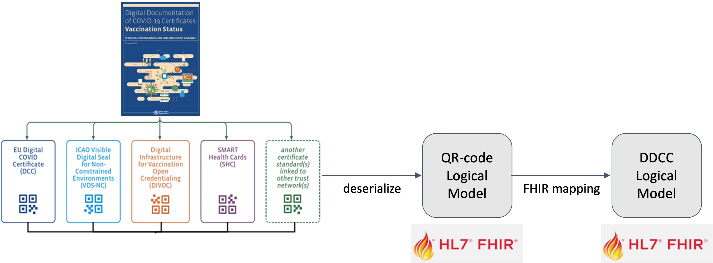

WHO SMART Trust
1.1.3 - v1.1.3

WHO SMART Trust
1.1.3 - v1.1.3

This page is part of the Trust (v1.1.3: Release) based on FHIR (HL7® FHIR® Standard) R4. This is the current published version. For a full list of available versions, see the Directory of published versions
A Trust Domain consists of:
At the current time, the following content profiles are recognized through the WHO’s Global Digital Health Certification Network (GDHCN):
Currently, the following trust domains are available:
DDCC : The Digital Documentation of COVID-19 Certificates (DDCC) Trust Domain covers the utilization of COVID-19 Vaccine Certificates and Test Results
IPS-PILGRIMAGE implementation Guide is intended to support the utilization of variable International Patient Summary (IPS) documents during pilgrimage.
The Digital Documentation of COVID-19 Certificates (DDCC) published in August 2021 and similar guidance for test results (https://www.who.int/publications/i/item/WHO-2019-nCoV-Digital_certificates_diagnostic_test_results-2022.1) published in March 2022 serve as the reference for the associated FHIR Implementation Guide. This Implementation Guide (IG) acts as the computable representation of the core data elements in the published guidance, mapped to standard terminologies. These data models, in the form of FHIR logical models, and terminologies, in the form of FHIR value sets, are the basis for interoperability between the various credential formats. The IG provides FHIR Structure Maps and Concept Maps to define transformations between supported credential formats and the core data set, which allows business rules to execute against a common set of data elements.

At the current time, the following content profiles are recognized through the WHO’s Digital Documentation of COVID Certificates (DDCC):
It can be difficult to find the “source of truth” specifications for the certificate formats that are mapped to the DDCC core data sets. The references contains links to the best known documentation for each of the certificate formats listed above.
The implementation guide includes a machine-readable representation of WHO guidelines for verifiable IPS during pilgrimage. It explicitly encodes computer-interoperable logic, including data models, terminologies, and logic expressions, in a computable language to support implementation of IPS during pilgrimage usage scenario.